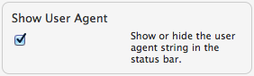
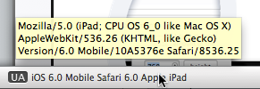

Responsive Resize
Show Active User Agent Info
The preference setting for 'Show User Agent' determines whether or not to show the active User Agent information in the application status bar.
- Open the application preferences, either from the main application menu or from the customize menu
 , or use the keyboard shortcut
⌘,
, or use the keyboard shortcut
⌘,
- Check the option to Show User Agent.

- The active User Agent information will be displayed in the application status bar.

NOTE: Responsive Resize lets you change the active User Agent String.